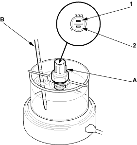
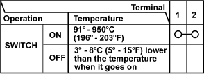
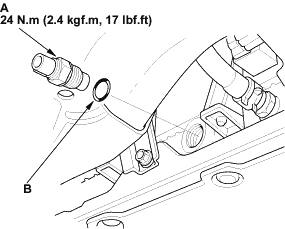

NOTE: Bleed air from the cooling system after installing the radiator fan switch (see page 10-6).
- Remove the radiator fan switch from the radiator (see page 10-17).
- Suspend the radiator fan switch (A) in a container of water as shown.

- Heat the water, and check the temperature with a thermometer. Do not let the thermometer (B) touch the bottom of the hot container.
- Measure the continuity between terminal No.1 and terminal No.2 according to the table.


- Disconnect the radiator fan switch connector, then remove the radiator fan switch (A).

- Install the radiator fan switch with a new O-ring (B).